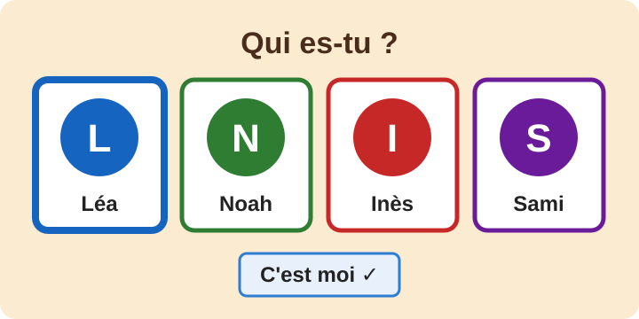
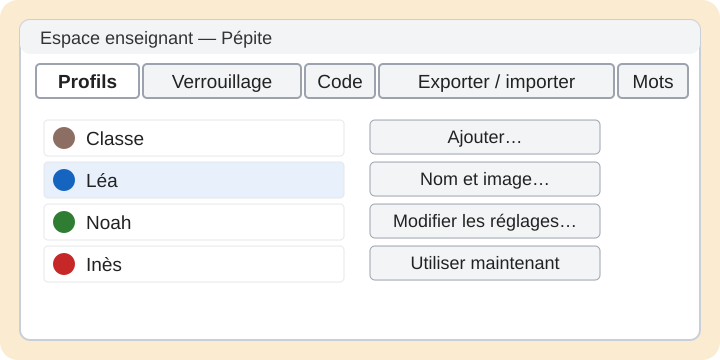

Enseignants et parents
Pépite à la maison ou en classe : les profils d'élèves, le code enseignant, les mots de la classe.
Plusieurs élèves sur un ordinateur
Au départ, Pépite a un seul profil : Mon profil. Pour une classe, ouvrez Réglages…, partie Plusieurs élèves, puis Activer la gestion enseignant…
Choisissez le code enseignant : 4 à 6 chiffres. Un code trop facile (1234, 0000…) est refusé. Les élèves ne doivent pas le connaître.
Notez le code de secours. Il n'est affiché qu'une fois : Imprimer… ou Copier, puis J'ai noté le code.
Pépite crée le profil Classe. Ajoutez ensuite un profil par élève dans l'Espace enseignant.
Classe donne ses réglages à tous les élèves ; chaque élève ne garde que ses différences. 40 profils au maximum, « Classe » comprise.
Un profil a un prénom, une image (un mot : chat, fusée…) et une couleur. Jamais de photo.
Qui es-tu ?
Au début de chaque session Windows, Pépite revient à Classe et affiche Qui es-tu ?
: l'élève clique sur son image, puis sur C'est moi ✓
. Pépite dit le prénom choisi.

Le menu de l'icône affiche alors le profil actuel et Changer de profil…
L'Espace enseignant
Menu de l'icône → Espace enseignant… Il demande toujours le code.

- Profils
- Ajouter…, Nom et image…, Dupliquer…, Supprimer…, Monter / Descendre, Modifier les réglages… d'un élève, Utiliser maintenant.
- Verrouillage
- Ce qui demande le code : changer de profil (non au départ), modifier les réglages du profil (oui au départ), quitter (non au départ).
Qui es-tu ?
au début de la session Windows. Le retour à « Classe » après une inactivité ou quand la session est verrouillée (Windows+L). Les Profils proposés sur ce poste. - Code
- Changer le code…, Nouveau code de secours…, Désactiver la gestion enseignant… (les profils restent enregistrés).
- Exporter / importer
- Voir les fichiers .pepite.
- Mots
- Les mots de chaque profil et de la classe, les listes et les leçons : voir plus bas.
Le bouton Fin de session revient à « Classe » et propose Qui es-tu ?
à l'élève suivant.
Code oublié
Dans la fenêtre du code, cliquez sur Code oublié ? et tapez le code de secours. Vous choisissez alors un nouveau code.
Sans le code de secours, l'administrateur de l'ordinateur peut remettre à zéro la gestion enseignant.
Listes de mots et leçons
Dans l'onglet Mots de l'Espace enseignant, choisissez le profil (ou « Classe »). Les mots de « Classe » sont proposés à tous les élèves.
- Nouvelle leçon… : collez le texte de la leçon, cliquez sur Chercher les mots, cochez les mots utiles, puis Enregistrer la liste. Le texte n'est jamais enregistré : seuls les mots cochés sont gardés.
- Une liste cochée est proposée. Une leçon reste active jusqu'à ce que vous la décochiez.
- Importer une liste (.txt)… : un mot par ligne. Exporter la liste (.txt)… fait l'inverse.
- Limites : 5 000 mots par élève, 10 000 pour la classe, 500 mots par leçon, 50 listes par profil.
Pépite n'apprend jamais seul : aucun mot tapé par un élève n'est gardé sans qu'on le demande. Voir aussi Mes mots, la page des élèves.
Les noms de la classe
Pépite connaît déjà des milliers de prénoms, de pays et de villes. Pour les prénoms de vos élèves ou les noms d'un projet, ajoutez-les aux mots de la classe.
Importer une base de noms… ajoute une base préparée (dossier ou fichier .zip, avec noms.json ou noms.csv), avec des images.
Images : seulement des pictogrammes ou des dessins, jamais de photos (en particulier pas de visages d'élèves). Vous êtes responsable des droits des images : la licence de chaque image est demandée, gardée et affichée.
Les fichiers .pepite
Onglet Exporter / importer : Exporter des profils enregistre les profils cochés dans un fichier « .pepite », pour un autre ordinateur ou une sauvegarde. Options : Inclure le code enseignant, Inclure les listes de mots, Inclure les images.
Importer un fichier… ajoute ou remplace des profils ; une sauvegarde est faite avant. Un double clic sur un fichier « .pepite » ouvre aussi l'import, après le code.
Le fichier contient les prénoms des élèves : gardez-le en lieu sûr et ne l'envoyez pas par Internet.
Ce que le code protège
Le code enseignant empêche un élève de changer les réglages ou de quitter Pépite par erreur. Ce n'est pas une protection informatique : une personne qui a accès au compte Windows peut lire ou supprimer les fichiers de Pépite.
Un réglage imposé par l'établissement pour tout l'ordinateur affiche Réglé par l'administrateur
: voir Installer dans une école.
Le mode journal (pour un test)
Pour aider à comprendre un problème : quittez Pépite, puis relancez-le avec l'option --log (le LISEZ-MOI donne la commande exacte). Le journal est enregistré dans %TEMP%\predict-keyboard.log.
En mode journal, les mots tapés et le texte sélectionné sont enregistrés (jamais les mots de passe, ni le code enseignant, ni les prénoms des profils, ni les mots des listes ; un prénom tapé par l'élève, lui, est enregistré comme le reste du texte). À utiliser seulement pour un test, puis supprimez le fichier. Ne joignez jamais un journal d'élève à un message public.